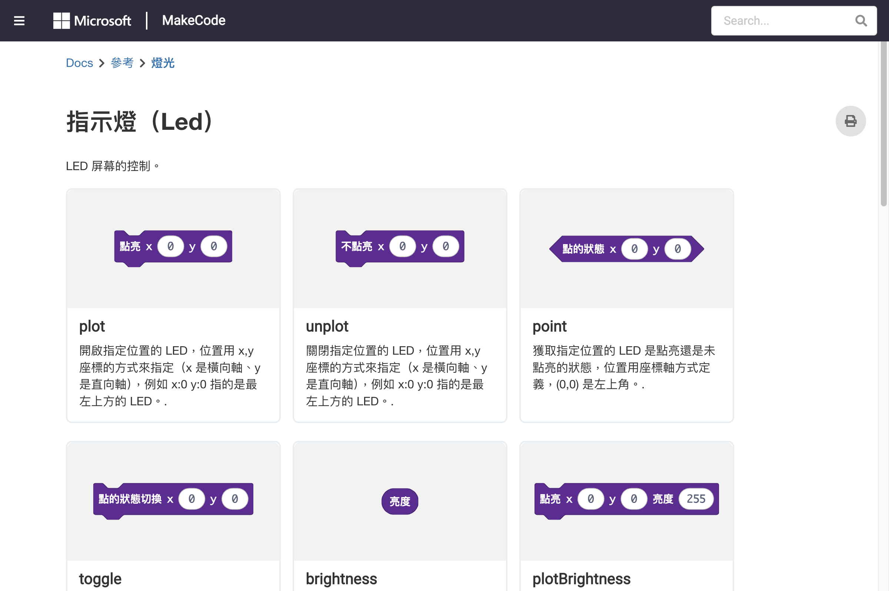

plot/unplot/toggle/brightness、LED 圖案控制
LED 分類提供對 5×5 LED 矩陣的精細控制，可以單獨操控每顆 LED。
| 積木 | 參數 | 說明 |
|---|---|---|
plot x y | x (0-4), y (0-4) | 點亮指定位置的 LED |
unplot x y | x (0-4), y (0-4) | 熄滅指定位置的 LED |
toggle x y | x (0-4), y (0-4) | 切換指定位置 LED 的亮滅狀態 |
point x y | x (0-4), y (0-4) | 檢查指定位置的 LED 是否亮著（回傳布林） |
brightness | value (0-255) | 設定全域 LED 亮度（0=暗, 255=最亮） |
stop animation | — | 停止正在進行的 LED 動畫 |
set display mode | mode | 設定顯示模式（亮度或 Greyscale） |
Micro:bit 的 LED 陣列使用 5×5 座標系統：
| x=0 | x=1 | x=2 | x=3 | x=4 | |
|---|---|---|---|---|---|
| y=0 | (0,0) | (1,0) | (2,0) | (3,0) | (4,0) |
| y=1 | (0,1) | (1,1) | (2,1) | (3,1) | (4,1) |
| y=2 | (0,2) | (1,2) | (2,2) | (3,2) | (4,2) |
| y=3 | (0,3) | (1,3) | (2,3) | (3,3) | (4,3) |
| y=4 | (0,4) | (1,4) | (2,4) | (3,4) | (4,4) |
原點 (0,0) 在左上角，x 向右增加，y 向下增加。
on start plot 0 0 plot 4 0 plot 2 2 plot 0 4 plot 4 4 pause 1000 unplot 0 0 unplot 4 0 unplot 2 2 unplot 0 4 unplot 4 4
這個範例會先點亮五個角落的 LED，1 秒後全部熄滅。

LED 積木參考
on button A pressed toggle 2 2
每次按下按鈕 A，中央 LED 會在亮/滅之間切換。這是一個非常好的互動範例。
forever
if point 2 2 then
show icon Yes
else
show icon No
pause 500
使用 point x y 可以檢查特定位置的 LED 是否亮著，回傳 true 或 false。
on start brightness 128 show icon Heart
設定亮度為 128（約 50%），讓 LED 不會太刺眼。
forever
for brightness from 0 to 255 by 10
brightness brightness
show icon Heart
for brightness from 255 to 0 by 10
brightness brightness
show icon Heart
JavaScript 對應程式碼：
forever(() => {
for (let b = 0; b <= 255; b += 10) {
led.setBrightness(b)
basic.showIcon(IconNames.Heart)
}
for (let b = 255; b >= 0; b -= 10) {
led.setBrightness(b)
basic.showIcon(IconNames.Heart)
}
})
預設模式只有亮/滅兩種狀態，但啟用 Greyscale 模式後，每顆 LED 可以有 256 級亮度：
on start set display mode Greyscale brightness 255 show icon Heart
let cursorX = 2 let cursorY = 2 on start plot cursorX cursorY on button A pressed unplot cursorX cursorY cursorX = (cursorX + 1) % 5 plot cursorX cursorY on button B pressed unplot cursorX cursorY cursorY = (cursorY + 1) % 5 plot cursorX cursorY
按 A 鍵向右移動游標，按 B 鍵向下移動游標，到邊界時自動繞回。